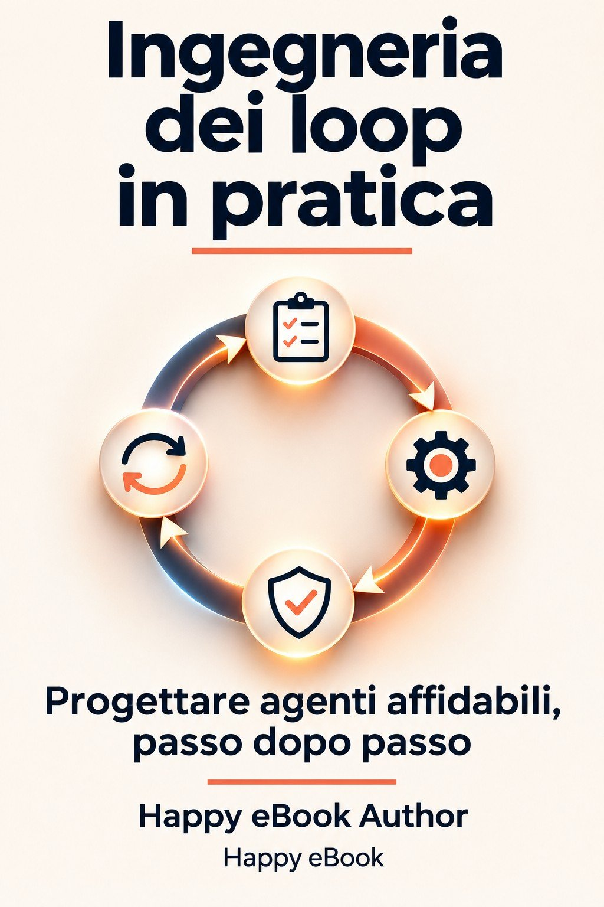

Ingegneria dei loop in pratica
Progettare agenti affidabili, passo dopo passo

Ingegneria dei loop in pratica
Progettare agenti affidabili, passo dopo passo
Come si trasforma un’attività affidata a un agente di IA in un processo ripetibile, verificabile, riprendibile e arrestabile in sicurezza? Ingegneria dei loop in pratica presenta un metodo operativo per progettare cicli di lavoro affidabili per agenti di IA. Invece di affidarsi a un prompt sempre più lungo o a tentativi automatici senza limiti, il libro definisce ciò che un sistema deve sapere prima di agire, quali prove deve raccogliere e quando deve fermarsi o chiedere una decisione umana. Attraverso esempi di raccolta e verifica di informazioni sull’IA, correzione di errori CI con Codex e produzione editoriale di ebook, imparerai a specificare attivatori, obiettivi osservabili, contesto e azioni consentite; osservazioni, verifiche indipendenti e prove legate a input e artefatti; stato persistente, chiavi di deduplicazione e ripresa dopo un errore; limiti per tempo, token, strumenti, costi e tentativi; retry, fallback e circuit breaker senza ripetere alla cieca effetti collaterali incerti; confini di autorizzazione, sandbox, coordinamento multiagente e approvazioni umane; regole di arresto, passaggi di consegne e responsabilità dell’approvatore. Il percorso è pensato sia per chi non programma sia per chi lavora con codice, test, CI e strumenti reali. I concetti sono spiegati con casi, esercizi simulati, specifiche riutilizzabili e avvertenze sui limiti delle prove: una simulazione o una risposta convincente non equivale a una verifica in produzione. Il download complementare attualmente collegato nel libro è in inglese. Non è annunciata una release italiana.
作品介紹；目前未提供購買或試閱入口